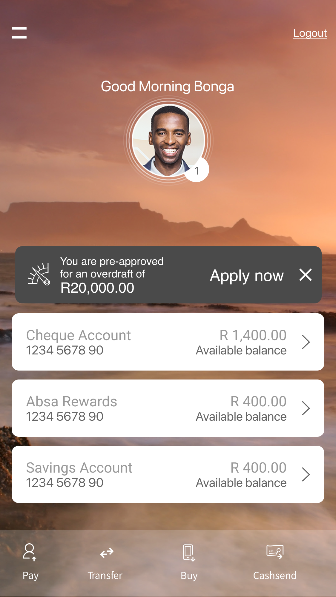

Overview
During 2016, Absa Bank sought to implement a new feature to the app that would enable the availability for customers to apply for overdraft loans.
This made possible for qualified clients to be able to safely apply for financial products directly from their smartphones. In my capacity as a Lead UX Designer on this project, I was responsible for moving from the strategy concepts through low fidelity wireframes to collaborating with other designers to build high-fidelity UI.
Our task was to solve an important issue of how to inform a client about their eligibility for an overdraft loan without distracting or disturbing them, without using any kind of dark patterns. Since the screen was adjusted for the iPhone 7, we had to follow the viewport and design system restrictions of that time period.

The Dilemma: Balancing Awareness against Responsibility
When it comes to financial products, loan applications are very sensitive products. Subjectively necessary as a safeguard, encouraging people to use these loans when not needed by them is unethical and bad for their finances. As for our UX issue, we were facing the following problem:
How can we inform those clients who have the opportunity to use this overdraft limit about their ability to do so without cluttering the main account screen, which may obstruct essential balance information, or encouraging the unnecessary use of credit?
To solve this issue, we attempted to use an "Ethical Placement" concept. In this case, we did not go for aggressive fullscreen notifications or flashing prompts but created subtle "decorations" on home screen and access points for this loan function.
Concept Decorations: Finding the Right Entry Point
We designed a few UI concepts to consider various ways on how to raise the overdraft option awareness. This exploration covered such approaches as banners, contextual widgets related to account balance, and non-intrusive notification badges. The following tests were conducted in order to find an interface that would create some awareness while still maintaining banking utility:
- Inline Message Cards: Small text messages that would pop up under account balances and could be quickly dismissed by users either temporarily or forever.
- Balance Badging: Implementation of a subtle tap-able tag within the transactional account box indicating pre-approved loan status, visible whenever users check their account balance.
- Account Offer Cards: Temporary account cards that occur only if account balance gets lower than a certain level.

Concept 1: Closed Badge

Concept 1: Expanded Panel

Concept 2: Account Toast

Concept 3: Inline Banner

Concept 4: Balance Card
From Greyscale to Polished Flows: The Application Wireframes
Before jumping into visual layouts, we mapped the end-to-end application funnel in greyscale. The wireframes focused on structuring complex regulatory requirements (collecting income details, existing debt obligations, and terms acceptances) into small, digestible screens.
Structuring this data entry on an iPhone 7 required careful layout of form fields and progress steps. By testing the flow in greyscale first, we could isolate usability issues, optimize button placements, and streamline the salary and debt verification fields.

The Final UI: Integrating with the Absa Brand System
The high-fidelity designs translated the greyscale structure into Absa's signature brand system. Using a red color palette with clear typography and soft borders, we built a polished, premium experience. The final application flow featured:
- A Clean Limit Calculator: Users could drag an interactive slider to select the exact overdraft amount they needed, showing immediate interest rates.
- The "Surecheck" Credit Status: A clear, simple screen displaying the credit checks running in the background, managing user expectations.
- Instant Activation: Once approved, the home screen balance dynamically updated to display the overdraft limit immediately, providing a seamless loop.
UX Wireframes (Greyscale Flow)
The low-fidelity user flow designed to structure regulatory inputs on the iPhone 7.
High-Fidelity UI Screens
The final user interface applying Absa's signature branding and polished everyday banking controls.